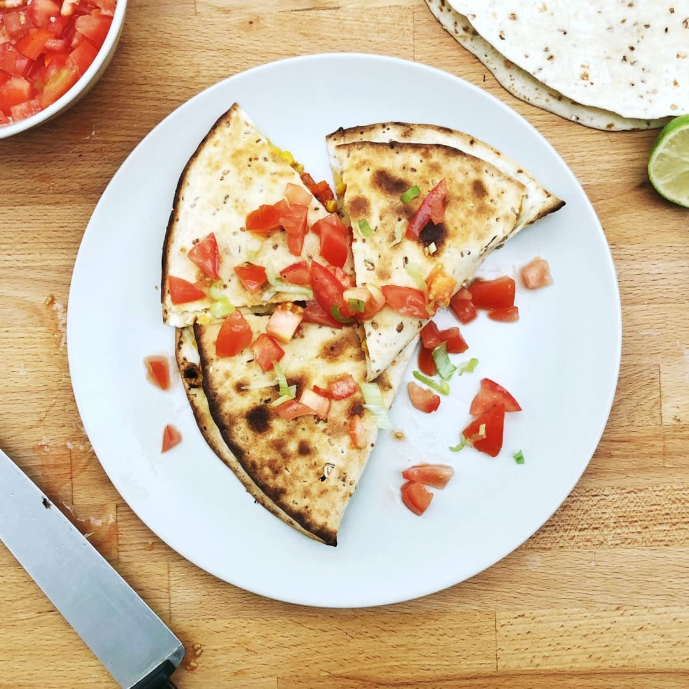

Sweetcorn Quesadillas

Description
A simple yet tasty dish made by layering tortillas with sweet corn, cheese, and spices, then grilling until crispy and golden. This quick and satisfying meal is perfect for a snack or light lunch, served with salsa or guacamole.
Ingredients
- 2 Spring Onions
- 1 Chilli
- 1 Red Pepper
- 1 small can of Sweetcorn
- 50g Grated Cheese
- 1 Big tomato
- 1 Lime
- 1 or 2 tortillas Wraps
- Cooking oil
- Salt and Pepper
Steps
- Start by switching on the grill on your oven. Grab a baking tray and add the sweetcorn, chopped chilli, chopped spring onions and chopped red pepper. Drizzle with a bit of oil, add some salt and pepper and mix it all up.
- Get the tray under the grill for about 5 minutes, giving it an occasional stir. You're looking for the corn to start to get nice and charred. When it's done, add the grated cheese and set aside. Chop up the tomato into small pieces and add the lime juice, salt and pepper.
- Get a tortilla and lay it on the baking tray. Add mixture to one side of the wrap and fold the other side across. Add a tiny bit of oil to the outside of the wrap and put it back in the grill for another 2-3 minutes to get toasty and golden brown. Cut up into slices and serve with loads of zingy tomato salsa!